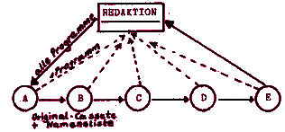

Nascom Journal |
August 1981 · Ausgabe 8 |
Liebe Leser,
dies ist nun erst die dritte Ausgabe, die vom neuen Redaktionsteam erstellt wurde, doch schon kann man eine neue Tendenz feststellen: die Entwicklung zu einem Medium, das es den Lesern ermöglicht, sich gegenseitig in ihren Interessen zu unterstützen. Professionelle wissenschaftliche Grundlagen können Sie einer Unmenge anderer Zeitschriften entnehmen. Hard- und Software, die sich bei anderen Nascom-Benutzern bewährt hat, Tips, die genau Ihr System betreffen, Antwort auf Ihre speziellen Fragen, an denen schon andere Leser geknobelt haben, gegenseitige Unterstützung der Nascom Anwender, all das sind Bereiche, die Ihr Journal abdecken kann. (Wenn Sie sich daran beteiligen).
Der Floppy-Tausch von Herrn Mayer-Gürr ist angelaufen, der Kassettenservice von Herrn Kreidl hat wie eine Bombe eingeschlagen. Herr Maurer übernimmt vorläufig das Überspielen von Nascom 2 auf Nascom 1 Format, Herr Baier zaubert Kassettenprogramme auf Floppy usw. usw. Eine allgemeine Kommunikation unter den Lesern beginnt sich auszubreiten. Nur Herr Zeller wartet einsam auf weitere Hardwarevorschläge.
Inzwischen sind auch viele Themen vorgeschlagen worden, die im Journal erscheinen sollten. Im nächsten Heft werden wir eine Sammlung davon abdrucken. Vielleicht haben Sie schon ein Programm oder Informationen dazu in der Schublade.
Die Redaktionsarbeit ist uns durch die rege Leserbeteiligung etwas über den Kopf gewachsen. Deshalb bitten wir um folgende Änderung: Schicken Sie Programme bitte nur noch auf Kassette ein. (Vergessen Sie nicht, das Format darauf zu vermerken). Jeder Einsender erhält dafür eine Kassette mit einem Programm nach Wunsch aus dem letzten Heft (für solche, die nicht gerne eintippen) oder ein sauberes Listing (für solche, die keinen Drucker besitzen). Auch Texte sollten Sie auf Kassette einschicken. Näheres zum Textformat im Artikel „Formatierprogramm“. Für Leute ohne Speichererweiterung steht das Programm „Bildschirm auf Kassette“ zur Verfügung, um problemlos Manuskripte auf Kassette zu speichern. (Es ist für Nassys Benutzer leicht umzuschreiben. Die entsprechenden Monitorroutinen sind unterstrichen. Das Programm ist voll relokatibel).
Inzwischen ist auch der Wunsch nach einer Kassettentauschzentrale laut geworden. Um die Arbeit zu minimieren, bieten wir folgende Möglichkeit an: Jeder Interessent schickt eine Kassette mit seinem Programm an die Redaktion. (Stichwort „Tauschzentrale“). Notwendige Texte, Erklärungen, Spielanleitungen etc. sollten vor dem Programm gespeichert sein. Bitte Ladeformat vermerken! Die Einsender werden in der Reihenfolge ihres Einsendedatums auf einer Liste eingetragen. Der erste Einsender erhält eine Kassette mit sämtlichen eingegangenen Programmen. Er kann sie kopieren und schickt das Original an den nächsten Namen der Liste, nachdem er seinen Namen gestrichen hat. Der letzte Einsender schickt das Original an die Redaktion zurück. Wir sind gespannt, ob dieses System funktioniert! (Jedenfalls müssen die Empfänger die Kassette möglichst schnell weiterschicken, sonst dauert es eine Ewigkeit).

Im letzten Heft wurde ein „Einheitsbus“ für PIO angekündigt. Das muß aus zwei Gründen auf die nächste Ausgabe verschoben werden: einmal haben wir keinen Platz mehr in dieser Ausgabe, zweitens soll ein alternativer Bus von Herrn Öhring zur Auswahl gestellt werden. Auch ein Grund, sich schon aufs nächste Heft zu freuen – Viel Spaß mit Nascom und Journal
Ihr Günter Böhm
| Seite 2 von 24 |
|---|